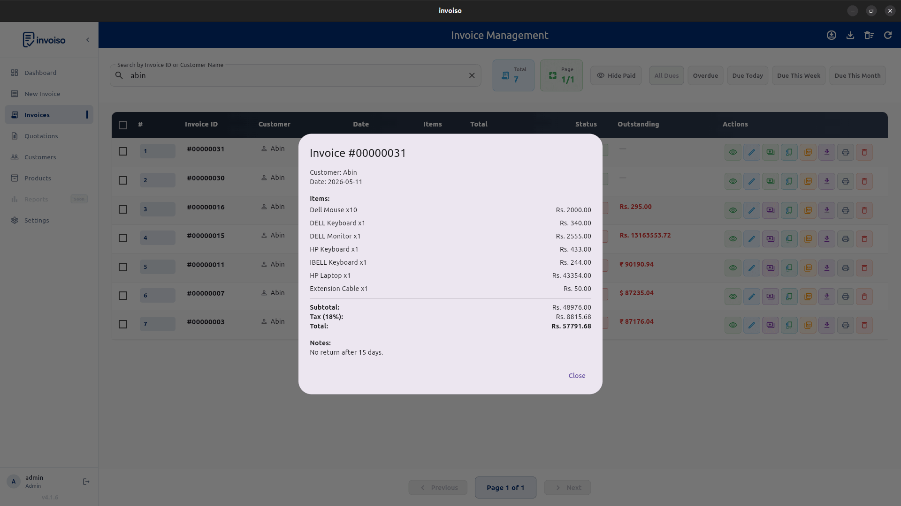

A UPI QR code on an invoice turns "please pay within 7 days" into "scan this and you're done." For Indian small businesses billing individual customers, it collapses the entire payment step — no typing a UPI ID, no copying an account number, no waiting for a bank transfer to clear. Here's what a good payment QR needs, and the exact steps to add one to every invoice in Invoiso.
What a payment QR should include
The QR must encode the correct UPI ID and payee (receiver) name — get either wrong and payments either
fail to scan or land somewhere else. A well-formed UPI QR uses the standard upi://pay
deep-link format, which every major UPI app reads the same way: Google Pay, PhonePe, Paytm, BHIM, and
Amazon Pay. Some setups also encode a fixed amount so the customer doesn't have to type it manually —
useful for a fixed-price service, less useful for invoices where the customer might pay a partial
amount.
How to add a UPI QR code in Invoiso
- Open Payment Settings. In Invoiso, go to Settings → Company Info → Payment Settings.
- Enter your UPI ID. Type your UPI ID into the UPI ID field — the format is
yourname@bank, for exampleshop@okhdfcbankor9876543210@ybl. - Turn on the QR toggle. Enable "Show UPI QR on invoice" so the code is embedded on generated PDFs.
- Save your settings. The UPI ID and toggle apply to every invoice going forward — you only configure this once.
- Generate any invoice. Create or export a PDF as usual. Invoiso builds the QR code automatically from your saved UPI ID and places it near the total, no extra step per invoice.

Which UPI apps can scan it
Because Invoiso generates a standard upi://pay deep link rather than a proprietary
format, the QR works with any UPI-enabled banking app your customer already has installed — there's
nothing for them to download or set up. Test it yourself before rolling it out: open your own UPI app,
scan a sample invoice PDF on screen or printed, and confirm your correct UPI ID and business name show
up before you tap pay.
Where to place it
Place the QR code near the payment summary or footer, where the customer naturally looks after checking the total. Keep it large enough to scan from a printed PDF — roughly 2.5cm square minimum for a printed A4 or A6 invoice — and avoid placing it over a patterned or dark background that reduces scan contrast.

Add fallback payment details
Add the UPI ID as plain text next to the QR code, and optionally bank account and IFSC details below it. If the QR code cannot be scanned — a bad print, a screen glare, an older phone camera — the customer still has a legible fallback and doesn't need to call you to ask for your payment details again.
Track payment status
A QR code helps collect payment, but the business still needs to mark whether the invoice is unpaid, partially paid, or fully paid. Update the invoice status as payments come in so your reports and outstanding-balance list stay accurate — a QR code that gets scanned doesn't automatically tell your books the invoice was settled.

Troubleshooting a QR that won't scan
Most scan failures come down to print quality or size, not the QR data itself. If customers report issues: check the invoice isn't printed at a reduced scale that shrinks the QR below a readable size, confirm your printer or PDF export isn't compressing the image into a blurry raster, and re-verify the UPI ID in Payment Settings hasn't been mistyped. When in doubt, scan your own invoice with a second phone before sending a batch out.
Invoiso supports UPI QR details on invoices and payment tracking in the desktop app. See GST billing software or download Invoiso.